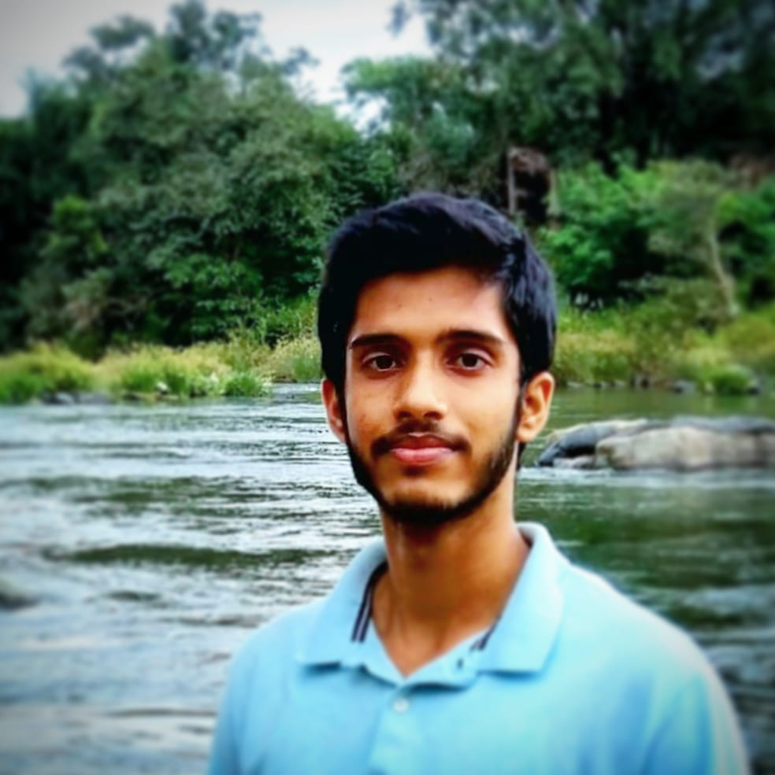

SAYED ZAHUR
A computer science student and cricketer, who is excited to learn new things! ✌
Email: sayedzahur2001@gmail.com
Portfolio:
Education:
The National Institute of Engineering, Mysuru-08
B.E, Information Science and Engineering
CGPA: 9.02
Professional Experiences:
SKILLS:
- C
- C++
- Python
- HTML
- CSS
- Javascript
- MySQL
- Linux/Unix
INTERESTS:
- Internet of Things
- Cloud
- General Knowledge and Current Affairs
LANGUAGES:
- English
- Kannada
- Hindi
- Urdu
Personal Projects:
- A simple portfolio website using HTML and CSS
- Grocery Store Management System - A database project using MySQL (Backend only)
Sports:
Professional Cricketer
- Represented KSCA Mysuru zone U-14 cricket team (2015)
- Represented Karnataka U-17 state team at SGFI nationals (2016)
- Representing College cricket team (August 2019 - Present)